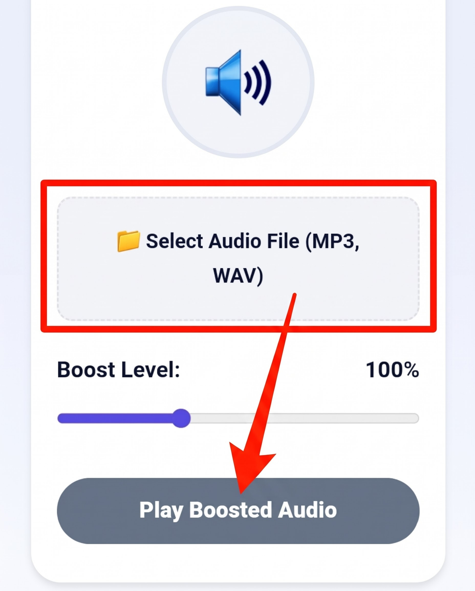

Audio Volume Booster
Amplify quiet voice notes, lectures, and music tracks up to 300% without quality degradation. Runs instantly inside your browser.
🔊
Amplify quiet voice notes, lectures, and music tracks up to 300% without quality degradation. Runs instantly inside your browser.
Every smartphone, tablet, and laptop features built-in mechanical volume buttons capped at a hardware ceiling of 100%. While this safeguard prevents hardware strain on internal speakers, it assumes that the audio file itself was mastered at standard commercial loudness levels. When you encounter a quiet voice note, an old digitized recording, a whispered remote conference lecture, or an indie track mastered at conservative decibel levels, maxing out your device volume still leaves the dialogue practically inaudible.
The MiMusic Audio Volume Booster solves this mismatch by applying digital gain staging inside your browser before the sound signal hits your physical headphone or speaker amplifier. Utilizing the native Web Audio API, our utility taps directly into the browser's floating-point audio engine. It parses the raw waveform data, recalculates peak amplitude points, and multiplies the mathematical gain curve in real-time, allowing you to boost output volume up to three times (300%) its original mastering limit.
Boosting your audio files takes only a few seconds and requires no technical knowledge. Here is the exact workflow:

Select your audio file, customize your gain multiplier slider, and hit play.
While digital amplification is extraordinarily effective, understanding acoustic headroom is crucial for maintaining pristine sound fidelity. In digital audio, amplitude is bounded by a ceiling known as 0 dBFS (Decibels relative to Full Scale). When a digital multiplier forces wave peaks past this threshold, the tops of the sine waves get squared off. Audio engineers refer to this phenomenon as digital clipping.
Clipping introduces harsh harmonic distortion that sounds like scratching, crackling, or harsh fuzz. While standard smartphone limiters protect micro-speaker voice coils from physical tearing, prolonged exposure to heavy distortion can fatigue your ears. To maintain optimal fidelity, gradually raise the boost slider until the dialogue becomes easily intelligible, pausing before the audio begins to crackle or distort.
Most commercial audio conversion portals force users to upload their personal files to remote cloud servers. This approach exposes personal voice memos and private recordings to third-party data interception, while creating tedious upload waits on mobile data connections. MiMusic.net functions entirely in-memory using client-side JavaScript. Your audio is decoded locally inside your device RAM, transformed instantaneously, and never leaves your browser sandbox.
Standard device volume controls regulate physical speaker amplification, but quiet files have low digital amplitude. Our tool multiplies the digital gain values of the audio signal mathematically in browser memory before sending it to your speakers, making inherently quiet recordings noticeably louder.
Modern mobile devices have hardware limiters to guard against physical blowout. However, extreme boost levels past 250% can cause digital clipping and distortion. If audio begins to crackle, slightly lower the boost slider to preserve speaker fidelity and protect your hearing.
No. Your files are processed 100% locally inside your device web browser via the Web Audio API. Nothing is uploaded, stored, or analyzed on remote servers.
Yes! Because the amplified audio stream is routed through your browser's primary audio output bus, the boosted signal transmits seamlessly over Bluetooth headphones, AUX cords, and external speakers.